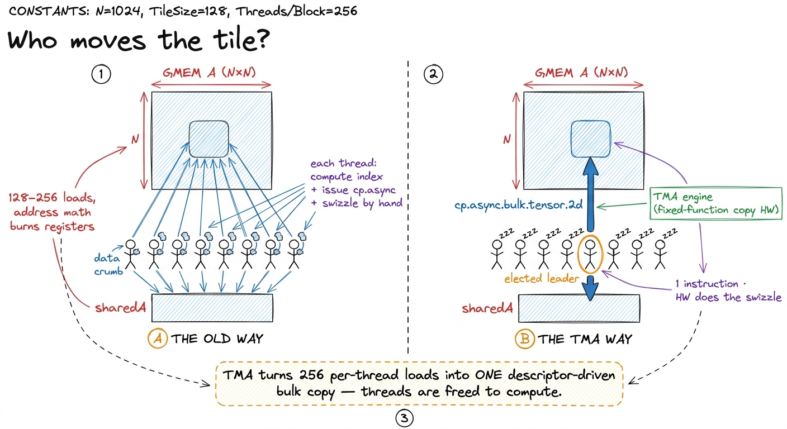
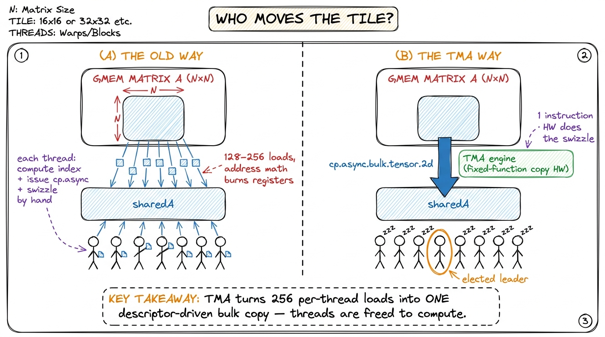
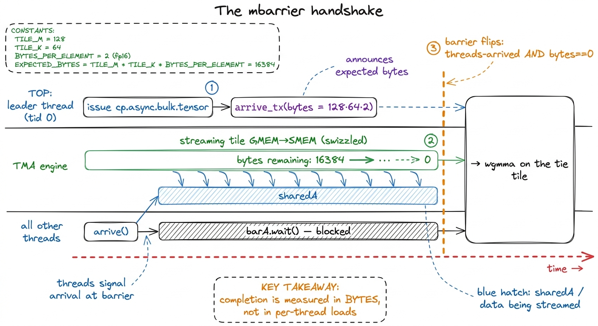
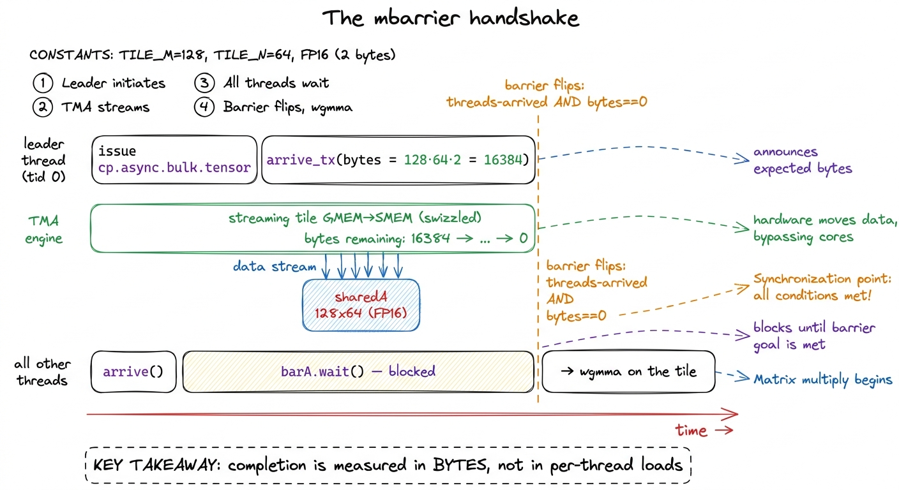
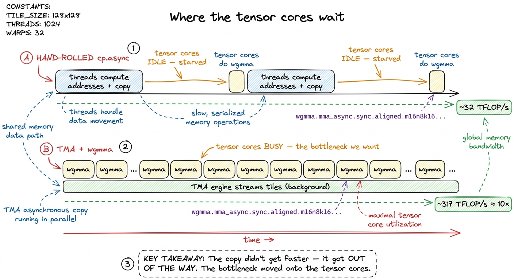
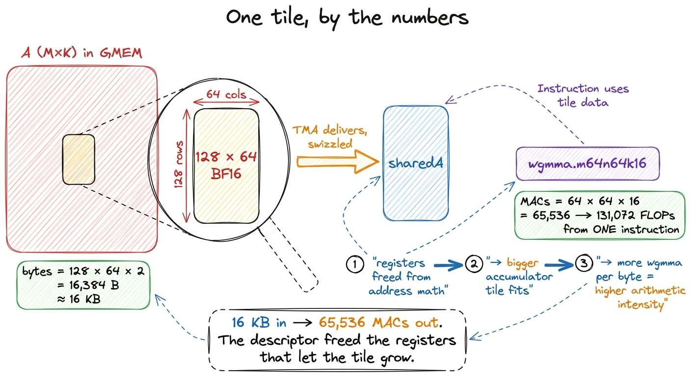
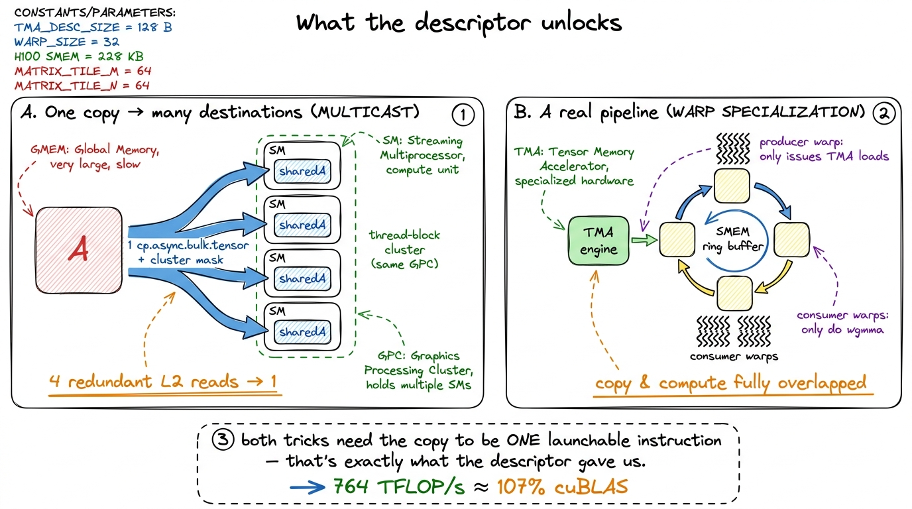

Hopper's TMA: async bulk copy TMA
Let me start with a question that sounds too simple to be interesting: when a GPU multiplies two matrices, who does the copying?
Every matrix-multiply kernel on this site's GEMM ladder is really two jobs stitched together. There is the math — multiply a tile of A by a tile of B, add it into an accumulator — and there is the logistics — get that tile of A and that tile of B out of the slow main memory and into the fast on-chip scratchpad so the math has something to chew on. On every kernel we have written so far, the same threads do both jobs. A warp of 32 lanes spends the first part of each loop iteration computing memory addresses and issuing loads, and only then, once the tile has landed, does it get to do arithmetic.
That is the arrangement this article is going to overturn. On an H100, that copying-with-your-own-threads is a genuine waste, because the chip physically contains a separate little machine whose only purpose in life is to move tiles of memory around. It is called the Tensor Memory Accelerator (TMA), it is brand new in the Hopper generation, and learning to hand the copying off to it is the exact moment a hobby kernel stops looking like a textbook exercise and starts looking like cuBLAS, NVIDIA's own hand-tuned library.
So the question this article answers is: what is the TMA, why does moving the copy off the compute threads help so much, and how do you actually wire it up? We will build the answer from the ground up. You do not need to have read the frontier kernels to follow along — you only need the one idea that a GPU has slow far-away memory and fast nearby memory, and that getting data from the far one to the near one is where most of the pain lives. If that sentence makes sense, you can keep up.
The two kinds of memory, and the errand that connects them
Let me establish the ground we are standing on, because everything hangs on it.
A GPU has, for our purposes, two places to keep numbers. There is global memory — the big pool of HBM that holds your whole matrix, tens of gigabytes, but it is far from the compute units and slow to reach: a read can take hundreds of clock cycles. And there is shared memory — a small scratchpad, a couple hundred kilobytes, that sits right next to each Streaming Multiprocessor (SM, the GPU's basic compute tile) and answers in a handful of cycles. The whole craft of a fast GEMM kernel is: haul a tile of the matrix from slow global memory into fast shared memory once, then reuse it many times for arithmetic before throwing it away and hauling the next tile. This is tiling, and it is the beating heart of the ladder.
Here is the mental model I want you to carry through the entire article, because we will reuse it constantly. Think of the compute threads as chefs, shared memory as the kitchen counter, and global memory as a warehouse across the street. The chefs are brilliant at cooking (arithmetic) and terrible at fetching. But in every kernel so far, we have made the chefs put down their knives, walk across the street, carry ingredients back one armful at a time, and only then return to the counter to cook. While a chef is out fetching, they are not cooking. That is the waste. TMA, when we get to it, is going to hire a dedicated delivery driver so the chefs never leave the kitchen.

figure rendering · The mental model for the whole article: chefs (compute threads) shouldHold that picture. Everything below is a more precise version of it.
What we were doing by hand
Let me show you the errand as it actually looks in code, so you feel the cost. In the classic tiled kernels, staging a tile into shared memory looks like this — every thread copies its own elements, computing its own source and destination indices:
// hand-rolled staging: every thread copies its own elements
sharedA[ty * TILE_K + tx] = A[(blockRow + ty) * N + (kIter + tx)];
sharedB[ty * TILE_N + tx] = B[(kIter + ty) * N + (blockCol + tx)];
__syncthreads();Read that carefully. Every one of the 128 or 256 threads in the block is computing a couple of multiply-and-add expressions just to figure out where to read from and where to write to, before any actual matrix arithmetic happens. Those index computations are real instructions. They occupy issue slots on the warp scheduler. They burn registers — the scarcest resource on the chip — to hold blockRow, kIter, the strides, the running offsets. And then everyone hits __syncthreads() and waits for the slowest lane before the math can begin.
Later kernels made this less awful. The double-buffering kernel upgraded the plain load to cp.async, Ampere's asynchronous-copy instruction, which at least lets the load run in the background while threads do other work, and staged two tiles at once so that copying the next tile overlapped with computing on the current one. That is a genuine improvement. But — and this is the key limitation — cp.async is still a per-thread instruction. Every thread in the block issues its own asynchronous copy, computes its own addresses, and takes part in the commit_group / wait_group bookkeeping that tracks when the loads finish. The chefs are now fetching in the background instead of standing frozen, but there are still 256 of them each making their own little trip. The address arithmetic still burns registers and issue slots we would much rather spend on math.
And there is a second, nastier problem that only shows up once you reach the tensor cores. The tensor cores — the dedicated matrix-multiply units that do the frontier's heavy lifting — do not want their input tile laid out in shared memory the plain, natural, row-by-row way. They want it swizzled: shuffled into a deliberate, non-obvious permutation.
Why? Shared memory is physically split into 32 parallel banks, like 32 tellers at a bank counter. If 32 threads all read from the same bank at once, they queue up one behind another — a bank conflict — and the read is serialized instead of happening in one shot. The tensor-core read instruction has a fixed access pattern, and if the tile sits in memory naturally, that pattern makes many lanes land on the same bank and stall. The swizzle is a permutation of the tile that spreads it across the 32 banks so the tensor core's read hits each bank exactly once — no conflict, full speed. Reproducing that swizzle by hand, index by index, is possible but genuinely miserable; it is per-element XOR bit-twiddling that is subtly wrong for a week before you catch it.1 The swizzle is not cosmetic and it is not optional. wgmma, the tensor-core instruction, reads its shared-memory operand in a fixed pattern; store the tile row-major and the reads collide on banks and the instruction stalls. The 128-byte swizzle interleaves the tile so consecutive 16-byte chunks land on different banks — one word per bank, no conflict. Doing it in scalar code means a per-element XOR of the address bits: correct, but pure noise in your kernel.
So the hand-rolled world has two taxes: the compute threads waste time and registers being couriers, and someone has to hand-code the swizzle. TMA is going to erase both at once.

figure rendering · Left: the hand-rolled cp.async world, every thread its own courier. RiThe hypothesis, in one sentence
Here is the whole idea, and then we will spend the rest of the article unpacking it:
Describe the copy once, then let dedicated hardware perform it while every thread goes and computes.
Instead of 256 threads each moving a few elements, a single elected thread hands the TMA a small descriptor — a data structure NVIDIA calls a CUtensorMap — that says, in effect: "here is a 2-D array in global memory of this shape and this stride; go fetch the tile at coordinate (x, y) into this shared-memory address, and swizzle it on the way." The engine takes it from there, asynchronously, on its own silicon. The threads that would have been couriers are free the instant the copy is launched — not when it finishes.
Notice how much this quietly changes. First, the address arithmetic leaves the kernel entirely: it moves into a descriptor that we build once, on the host CPU, before the kernel ever runs. Second, the swizzle stops being code we maintain and becomes a hardware feature we request by name. Third, the copy becomes truly fire-and-forget — issued by one thread, awaited by all, overlapping with the tensor-core math.
Three wins from one reframing. Let us earn each of them.
Building the descriptor: the tile's address book
The CUtensorMap is a 128-byte opaque blob. "Opaque" means you do not fill in its fields yourself — you do not know or care about its internal bit layout. Instead you call a driver-API function, cuTensorMapEncodeTiled, and it packs your human-readable metadata into the exact bit pattern the TMA hardware expects to read.2 The descriptor must be 128-byte aligned, and the toolkit is picky about where it lives. The clean, blessed path is to build it on the host and pass it to the kernel as a __grid_constant__ const CUtensorMap by value — this lets the driver place it somewhere the TMA engine can fetch it cheaply. Passing a pointer to a device-global copy also works but is easy to get subtly wrong; start with the grid-constant form.
Crucially — and this is the part that makes TMA cheap — the descriptor is built on the host, once, before the kernel launches. It is a fact about your matrix's layout: its shape, its stride, the tile size you want, the swizzle. None of that changes from one loop iteration to the next, so none of it belongs inside the hot loop. Think of it as the tile's address book: written up front, then consulted by the delivery driver on every single trip without ever being rewritten.
You describe five things when you encode it:
- the element type (here, BF16 — the 16-bit float the tensor cores run on),
- the global dimensions of the full matrix in memory,
- the global strides in bytes (how many bytes to step to move one row down),
- the box dimensions — the tile shape you want the engine to carve out, e.g.
128 × 64, - the swizzle mode — where you ask, by name, for the 128-byte swizzle the tensor cores need.
// HOST side — built once, before launch
CUtensorMap tma_map_A{};
uint64_t gmem_shape[2] = { (uint64_t)K, (uint64_t)M }; // full A, col-major view
uint64_t gmem_stride[1] = { (uint64_t)K * sizeof(bf16) }; // bytes between rows
uint32_t box_shape[2] = { TILE_K, TILE_M }; // the tile we fetch
uint32_t elem_stride[2] = { 1, 1 };
cuTensorMapEncodeTiled(
&tma_map_A, CU_TENSOR_MAP_DATA_TYPE_BFLOAT16,
2, A_gmem_ptr, gmem_shape, gmem_stride, box_shape, elem_stride,
CU_TENSOR_MAP_INTERLEAVE_NONE,
CU_TENSOR_MAP_SWIZZLE_128B, // <- the swizzle wgmma wants
CU_TENSOR_MAP_L2_PROMOTION_L2_128B,
CU_TENSOR_MAP_FLOAT_OOB_FILL_NONE);Look at that fifth argument, CU_TENSOR_MAP_SWIZZLE_128B. That single enum is the entire week of miserable bit-twiddling from the last section, replaced by a request. From this point on, every tile the engine delivers arrives already permuted into the exact bank-friendly layout the tensor cores want, at no cost to us. When I first wired this up, that was the moment it clicked that TMA is not "a faster memcpy" — it is the hardware absorbing an entire category of code I used to have to write.

figure rendering · The descriptor is a 128-byte address book: shape, stride, tile size, aIssuing the copy inside the kernel
Now we are inside the kernel, in the hot loop, and the copy itself is almost anticlimactic — which is the point. One thread, an elected leader (conventionally threadIdx.x == 0), issues a single instruction that names the descriptor, the destination shared-memory address, the tile coordinates, and a barrier to signal on when it finishes.
Under the hood this compiles to the PTX instruction cp.async.bulk.tensor.2d.shared::cluster.global.tile — a mouthful, but read it left to right and it narrates itself: an async bulk copy of a tensor tile, in 2d, from global memory into shared memory, using the tile descriptor. Through the CUDA headers it is just a function call:
// DEVICE side — one thread launches the whole tile
if (threadIdx.x == 0) {
cde::cp_async_bulk_tensor_2d_global_to_shared(
&sharedA[0], &tma_map_A, kIter * TILE_K, blockRow * TILE_M, barA);
// tell the barrier how many bytes to expect for this transfer
cuda::device::barrier_arrive_tx(barA, 1, TILE_M * TILE_K * sizeof(bf16));
} else {
barA.arrive(); // everyone else just checks in
}
barA.wait(std::move(token)); // ALL threads block until TMA is doneOne thread launches an entire tile. The other 255 threads do essentially nothing but check in on the barrier and wait. That asymmetry is exactly what we wanted from the kitchen picture: one delivery driver drives, the chefs stay at the counter.
But notice the odd bookkeeping on line 6 — barrier_arrive_tx with a byte count. That is the piece everyone gets wrong the first time, so let us slow all the way down and understand it.
The mbarrier handshake: completion measured in bytes
How does a waiting thread know the tile has actually landed? With cp.async, completion was thread-relative: each thread's own loads finished, and cp.async.wait_group waited for your loads. But TMA's copy is not issued per-thread — it is issued once, by one thread, and it delivers bytes on its own schedule from a separate engine. So "wait for my loads to finish" is meaningless here; the thread that is waiting never issued a load in the first place. We need a different completion signal.
TMA's answer is the mbarrier — a barrier object that lives in shared memory and carries not just an arrival count but a byte-transaction count. This is called the expect-tx protocol, and here is exactly how it plays out each iteration:
- Before the loop, the barrier is initialized once with the number of threads that will arrive on it — say all 256.
- Each iteration, the leader thread does two things back to back. It issues the TMA copy, and it calls
barrier_arrive_txannouncing exactly how many bytes this transfer will deliver:TILE_M * TILE_K * sizeof(bf16). For a128 × 64BF16 tile that is128 × 64 × 2 = 16,384bytes. - The TMA engine, as it streams the tile into shared memory, decrements that byte count. It started at 16,384; every chunk that lands subtracts from it; when it reaches zero, the bytes have all arrived.
- The barrier flips — releasing every waiting thread — only when both conditions hold: all threads have arrived, and the expected byte count has hit zero.
So barA.wait() is not really waiting on the other threads. It is waiting on the bytes. The barrier is a rendezvous between "everyone got here" and "the delivery is complete," and it only opens the door when both are true.3 This is the single most common TMA bug, so I will state it flatly: the expect-tx byte count must match the transfer size exactly. Announce too few bytes and the barrier flips early — threads charge ahead and read a half-filled, garbage tile. Announce too many and the counter never reaches zero and the kernel hangs forever. There is no forgiving middle ground. When a TMA kernel produces wrong numbers or deadlocks, check this arithmetic first.

figure rendering · The expect-tx handshake: the leader announces a byte count, the engineThe measurement: an order-of-magnitude jump
So we have replaced hand-rolled cp.async staging with a TMA descriptor, and we feed the loaded, pre-swizzled tile straight into the tensor cores via wgmma (the warp-group matrix-multiply instruction — the topic of the next article; for now just know it is the instruction that actually multiplies the tile on the tensor cores). What does the profiler say?
This is the single biggest jump on the whole frontier. The worklog kernel that first swaps hand-rolled staging for a TMA-plus-wgmma inner loop — a modest BM=64, BN=64, BK=16 tile, needing only about 2.5 KB of shared memory for the operands — leaps from roughly 32 TFLOP/s to about 317 TFLOP/s in BF16. That is very nearly a 10× jump from one structural change.4 That 317 TFLOP/s is a snapshot of one intermediate kernel, not the ceiling. It is the reward for merely getting the copy engine and the tensor cores talking to each other — before double-buffering, register tuning, or clusters. Treat it as the shape of the win, not a fixed benchmark; the exact figure shifts with tile sizes and CUDA toolkit version. The same worklog rides this same TMA foundation all the way to 764 TFLOP/s, about 107% of cuBLAS, once warp specialization and clusters are stacked on top.
Let me make sure that 10× does not feel like magic, because a 10× from "moving the copy to different silicon" should surprise you — the copy still has to happen, the same bytes still have to cross the same bus. So why the enormous jump?
Because the win is not that the copy got faster. It is that the copy got out of the way. In the old kernel, the tensor cores sat idle whenever the compute threads were busy being couriers — and they were busy being couriers a lot. Now Nsight Compute, NVIDIA's profiler, tells a clean story: the thousands of per-thread LDGSTS instructions (the SASS that cp.async compiles to) collapse into a handful of UTMALDG bulk-tensor instructions, and the warp stalls that used to read "waiting on shared-memory writes" turn into stalls that read "waiting on wgmma." And that second kind of stall is exactly the stall you want — it means the tensor cores are now the bottleneck, saturated, and everything else is out of their way. We stopped starving the expensive units.
We have, in the language of this site, moved firmly back into the compute-bound regime. The copy is off the critical path. It happens in the background, on dedicated silicon, while the tensor cores grind through the previous tile. That is the entire point of the exercise, and it is why TMA is a prerequisite for everything past it rather than a nice-to-have you sprinkle on at the end.

figure rendering · Before: tensor cores starve while threads run errands. After: the TMAZooming in: what one tile costs, by hand
I want to make the "arithmetic intensity" claim concrete instead of hand-wavy, because it is the deepest reason TMA matters. Let us zoom all the way in to a single tile and count.
Take that 128 × 64 BF16 tile of A. As bytes, it is 128 × 64 × 2 = 16,384 bytes — 16 KB crossing from global to shared memory. Now, what do we do with those 16 KB once they land? We multiply that tile of A against a tile of B on the tensor cores. A single wgmma.m64n64k16 instruction — one tensor-core matrix-multiply — performs 64 × 64 × 16 = 65,536 multiply-accumulate operations, which is 131,072 floating-point ops (a multiply and an add each), all from one instruction issue.5 One wgmma.m64n64k16 doing 65,536 MACs from a single instruction is the whole reason tensor cores exist. Compare it to a scalar FMA on a CUDA core: 1 MAC per instruction. The tensor core does over 65,000× the work per issue. Feeding a unit that hungry is precisely the problem TMA solves — a per-thread copy engine simply cannot shovel operands fast enough to keep it fed.
Here is the point. The value of a kernel is set by its arithmetic intensity — how many math ops you do per byte you move. If your threads are busy computing addresses, every register they spend on blockRow and kIter and running offsets is a register they cannot spend holding accumulators. And the number of accumulators you can hold sets how big a tile each warp group can work on before it has to go back to memory. Small tiles → few ops per byte → memory-bound → slow.
TMA breaks that squeeze. When the layout knowledge lives in a 128-byte descriptor instead of in every thread's registers, those registers come back to the compute side. You can hold a bigger accumulator tile. A bigger tile means more wgmma per byte fetched — higher arithmetic intensity — which is the entire game. The final worklog kernels ride this all the way up to 128 × 256 output tiles per thread block, tiles that would be unthinkable if every thread were still carrying the matrix's shape and stride around in its own registers.

figure rendering · Counting one tile: 16 KB of BF16 in, 65,536 multiply-accumulates out —Why the descriptor model is the real win
Step back with me. It is tempting to file TMA under "a faster memcpy" and move on. That undersells it badly. The deeper shift — the thing worth carrying to every future kernel — is that the layout knowledge left the kernel.
In the hand-rolled world, every single thread carried the matrix's shape, its stride, and its swizzle recipe in its own registers, and recomputed source and destination addresses on every iteration of the loop. That is 256 copies of the same knowledge, recomputed millions of times. With TMA, that knowledge lives in one 128-byte descriptor, built once on the host, and the hot loop collapses to four steps: issue the copy, announce the bytes, wait, compute. The kitchen picture from the top of the article is now literal — the recipe for where the ingredients are lives with the delivery driver, and the chefs never think about it again.
And this reframing is not just tidy; it is what unlocks the two moves that carry the kernel the rest of the way to and past cuBLAS. Both are the subject of the next article, but I want you to see how directly they fall out of the descriptor model, because that is the whole reason we built it.
The first move is multicast. When several SMs all need the same tile of A — which happens constantly in a tiled GEMM, since a whole strip of output tiles shares one input strip — a single TMA copy can fan that tile out to all of them from one trip out of L2 cache, instead of each SM paying for its own redundant read.6 TMA multicast rides on Hopper's thread-block clusters and distributed shared memory — a group of SMs on the same GPC that can address each other's shared memory. One cp.async.bulk.tensor with a cluster CTA mask writes the tile into every participating SM's shared memory at once, turning N redundant L2 reads into one. It only pays off when the SMs genuinely share an operand — which, for A in a tiled GEMM, they emphatically do. In the worklog this is worth several more points of cuBLAS. You could never express "one copy, many destinations" when the copy was 256 independent per-thread loads. You can express it trivially when the copy is one descriptor-driven instruction.
The second move is turning the copy engine and the tensor cores into a proper producer-consumer pipeline — warp specialization. A small set of warps (the producers) do nothing but issue TMA loads into a ring of shared-memory buffers, while the rest of the warps (the consumers) do nothing but wgmma. Copy and compute then overlap perfectly, and the tensor cores never once wait on memory. The final worklog kernel runs three warp groups — one producer, two consumers — feeding 128 × 256 tiles, and lands at 764 TFLOP/s, about 107% of cuBLAS. That pipeline is where the last stubborn points of performance hide.

figure rendering · The two moves past cuBLAS — multicast and warp specialization — both fThe through-line
Let me close where we started, with the chefs and the warehouse, because the whole journey fits in that one picture.
We began by noticing that our kernels made the chefs — the compute threads — put down their knives and run errands across the street. cp.async let them fetch in the background, but they were still each making the trip, and each carrying the matrix's floor plan in their heads. TMA hired a dedicated delivery driver: we wrote the floor plan down once, in a 128-byte descriptor, handed it to the driver, and now a single elected thread says "go" and the whole tile arrives — pre-arranged into the exact bank-friendly order the tensor cores want — while every chef stays at the counter cooking. We measured the payoff: an order-of-magnitude jump, from about 32 to about 317 TFLOP/s, as the tensor cores stopped starving and became the bottleneck we want.
And the reason the win is structural, not incremental, is that the layout knowledge left the kernel. That is what freed the registers to grow the tiles, and it is what turned the copy into a single launchable instruction — which in turn is the only reason multicast and warp specialization are even expressible. Everything the frontier does past this point stands on the descriptor model we just built.
The final piece is to give the delivery driver its own dedicated warps and a queue to work with, so copy and compute never once collide. That is the warp-specialized wgmma pipeline, and it is where the last few points of cuBLAS — and then a little past it — finally come from. We got the courier off the compute threads' backs. Next, we give the courier a lane of its own.